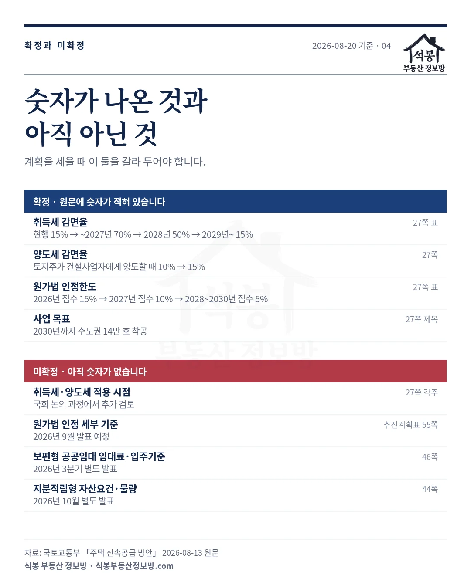
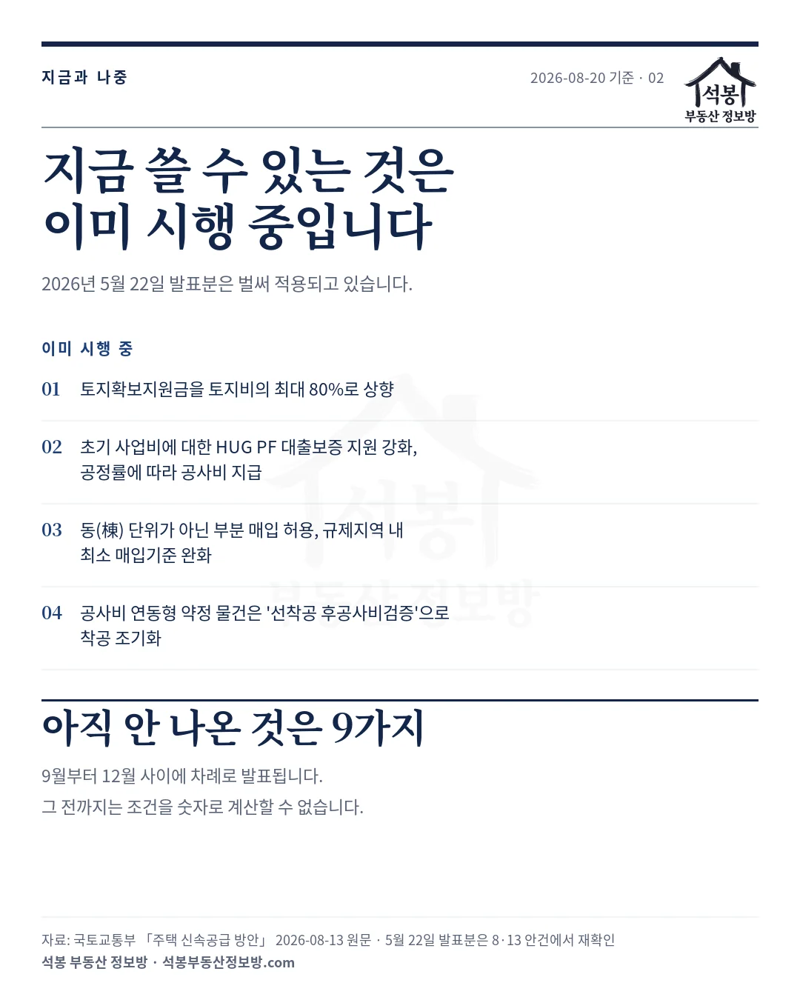
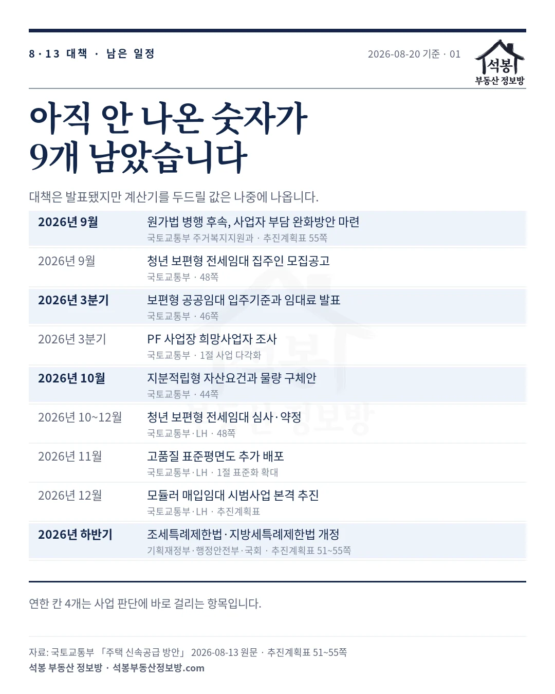
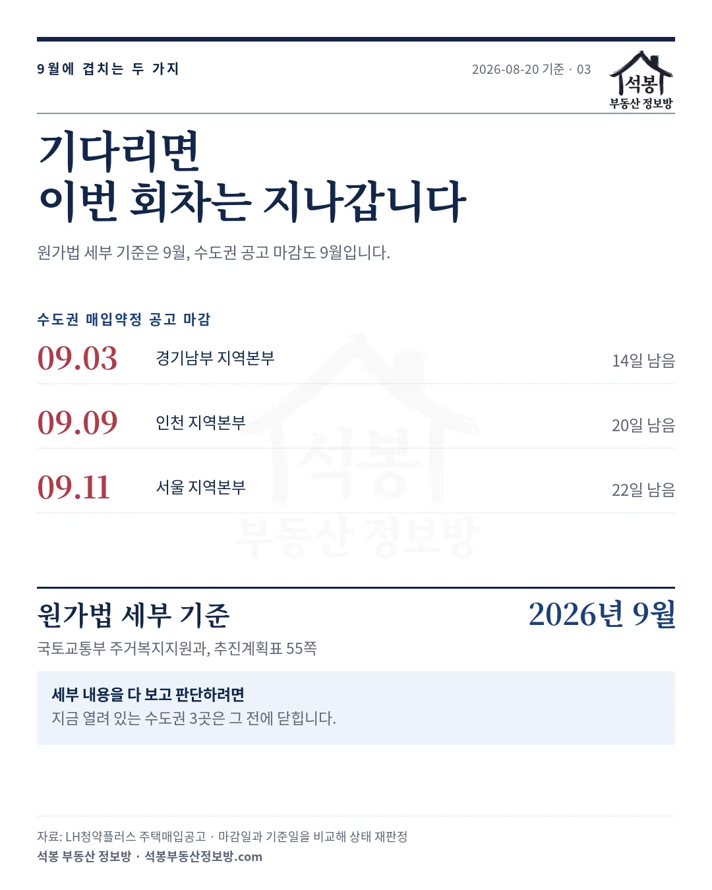

2026년 8월 13일에 나온 「주택 신속공급 방안」을 원문으로 다시 읽었습니다. 발표는 끝났지만 문서가 끝난 것은 아니었습니다. 세금 감면율처럼 숫자가 확정된 항목이 있는 반면, 임대료와 자산요건, 세부 인정 기준처럼 별도 발표로 미뤄 둔 항목이 9개 남아 있습니다. 그 9개가 2026년 9월부터 12월 사이에 차례로 나옵니다. 지금 결정해야 할 것과 기다려도 되는 것을 가르는 데 쓰시라고 정리했습니다.
먼저, 숫자가 이미 나온 것
기사로 많이 다뤄진 부분입니다. 원문 27쪽에 표로 정리돼 있고, 연도별 숫자까지 적혀 있어 지금 계산에 넣을 수 있습니다.
| 항목 | 원문에 적힌 내용 |
|---|---|
| 취득세 감면율 | 현행 15%, 2027년까지 70%, 2028년 50%, 2029년 이후 15% |
| 양도세 감면율 | 토지주가 건설사업자에게 양도할 때 10%에서 15%로 |
| 원가법 인정한도 | 2026년 접수 15%, 2027년 접수 10%, 2028년부터 2030년 접수 5% |
| 사업 목표 | 2030년까지 수도권 14만 호 착공 |
여기서 눈에 띄는 것은 감면율과 인정한도가 둘 다 시간이 갈수록 줄어드는 구조라는 점입니다. 취득세는 2027년까지가 가장 크고, 원가법 인정한도도 2026년 접수분이 가장 큽니다. 빨리 움직인 쪽에 더 주라는 설계입니다.
가입하시면 지역 시장조사 보고서(약식)를 2회 무료로 요청하실 수 있습니다.
그런데 정작 계산에 필요한 숫자는 아직입니다
같은 문서에 이렇게 적힌 항목들이 있습니다.
| 항목 | 언제 | 근거 |
|---|---|---|
| 취득세·양도세 적용 시점 | 국회 논의에서 추가 검토 | 27쪽 각주 |
| 원가법 인정 세부 기준 | 2026년 9월 발표 예정 | 추진계획표 55쪽 |
| 보편형 공공임대 임대료·입주기준 | 2026년 3분기 별도 발표 | 46쪽 |
| 지분적립형 자산요건·물량 | 2026년 10월 별도 발표 | 44쪽 |
감면율은 나왔는데 언제부터 적용되는지가 안 나왔고, 인정한도 15%는 나왔는데 그 15%를 무엇에 어떻게 얹는지가 안 나왔습니다. 임대료를 모르면 보편형 공공임대의 수익 구조를 계산할 수 없고, 자산요건을 모르면 지분적립형의 수요층을 잡을 수 없습니다. 대책을 읽고 바로 사업성을 뽑아보려다 막히는 지점이 대부분 여기입니다.

대신 이미 시행 중인 것이 네 가지 있습니다
8·13 대책만 보고 "아직 아무것도 안 바뀌었다"고 읽으면 곤란합니다. 2026년 5월 22일에 발표돼 이미 적용되고 있는 조치들이 8·13 안건에서 다시 확인됐습니다. 지금 당장 쓸 수 있는 것은 이쪽입니다.
| 번호 | 내용 |
|---|---|
| 01 | 토지확보지원금을 토지비의 최대 80%로 상향 |
| 02 | 초기 사업비에 대한 HUG PF 대출보증 지원 강화, 공정률에 따라 공사비 지급 |
| 03 | 동(棟) 단위가 아닌 부분 매입 허용, 규제지역 내 최소 매입기준 완화 |
| 04 | 공사비 연동형 약정 물건은 선착공 후공사비검증으로 착공 조기화 |
토지비의 80%, 부분 매입 허용, 선착공 세 가지는 자금 계획을 바꾸는 항목입니다. 특히 부분 매입은 한 동을 통째로 넘겨야 했던 사업지에서 선택지를 늘립니다. 기다릴 이유가 없는 조건들이니 지금 검토에 넣으셔도 됩니다.

9월부터 12월까지, 나올 순서
추진계획표와 본문에서 시점이 명시된 항목만 뽑았습니다. 보도자료 표에만 있고 원문에서 확인되지 않은 항목은 뺐습니다.
| 시점 | 발표·시행 예정 | 주관 |
|---|---|---|
| 2026년 9월 | 원가법 병행 후속, 사업자 부담 완화방안 마련 | 국토교통부 주거복지지원과 |
| 2026년 9월 | 청년 보편형 전세임대 집주인 모집공고 | 국토교통부 |
| 2026년 3분기 | 보편형 공공임대 입주기준과 임대료 발표 | 국토교통부 |
| 2026년 3분기 | PF 사업장 희망사업자 조사 | 국토교통부 |
| 2026년 10월 | 지분적립형 자산요건과 물량 구체안 | 국토교통부 |
| 2026년 10~12월 | 청년 보편형 전세임대 심사·약정 | 국토교통부·LH |
| 2026년 11월 | 고품질 표준평면도 추가 배포 | 국토교통부·LH |
| 2026년 12월 | 모듈러 매입임대 시범사업 본격 추진 | 국토교통부·LH |
| 2026년 하반기 | 조세특례제한법·지방세특례제한법 개정 | 기획재정부·행정안전부·국회 |
붉게 표시한 네 가지가 사업 판단에 바로 걸립니다. 원가법 후속과 세법 개정은 수익에, 보편형 공공임대 임대료와 지분적립형 자산요건은 수요에 직접 닿습니다. 나머지 다섯 가지는 알아 두면 좋은 정도입니다.
세법 개정이 2026년 하반기로 잡혀 있다는 점도 같이 보셔야 합니다. 취득세 70%와 양도세 15%는 법이 바뀌어야 실제로 적용됩니다. 국회 일정에 따라 시점이 밀릴 수 있고, 원문 27쪽 각주도 적용 시점을 추가 검토 대상으로 남겨 뒀습니다.

기다리면 이번 회차는 지나갑니다
여기가 이 글에서 제일 중요한 대목입니다. 원가법 세부 기준이 2026년 9월에 나오는데, 지금 열려 있는 수도권 매입약정 공고도 9월에 닫힙니다. 저희가 매일 받는 LH 주택매입공고에서 마감일로 다시 판정한 결과입니다.
| 지역본부 | 마감 | 2026년 8월 20일 기준 |
|---|---|---|
| 경기남부 | 2026년 9월 3일 | 14일 남음 |
| 인천 | 2026년 9월 9일 | 20일 남음 |
| 서울 | 2026년 9월 11일 | 22일 남음 |
약정 방식으로 열려 있는 공고는 2026년 8월 20일 기준 모두 7건이고, 그중 5건이 2026년 9월 30일 이전에 닫힙니다. 수도권은 위 세 곳입니다. 세부 기준을 다 확인하고 판단하겠다는 계획이라면 이 세 건은 그냥 지나갑니다. 반대로 이번 회차에 넣겠다면 세부 기준이 없는 상태로 결정해야 합니다. 어느 쪽이든 선택이지만, 미루는 것도 선택이라는 점은 알고 계시는 편이 낫습니다.
관할 본부가 어디인지에 따라 판단 재료가 달라집니다. 서울지역본부 관할인 관악구 신림동, 경기남부 관할인 하남시 덕풍동, 인천 관할인 계양구 계양동은 같은 수도권이어도 실거래 단가와 임대 수요 두께가 다릅니다. 지도에서 그 동네 거래를 직접 보시면 매입 가격 기준선을 잡을 때 도움이 됩니다.

보도자료 표에는 건축 규제 완화, 조기착공 인센티브, 재개발 관련 항목도 적혀 있습니다. 다만 저희가 원문에서 쪽번호까지 확인하지 못한 부분이라 이번 글에서는 뺐습니다. 지난번에 원문을 펼쳤을 때 보도자료 표와 내용이 다른 곳이 있었던 터라, 확인된 것만 싣는 편이 낫다고 판단했습니다. 확인이 끝나면 따로 정리하겠습니다.
지금 결정할 것과 기다릴 것
8·13 대책은 절반만 나온 문서입니다. 세금 감면율과 원가법 인정한도, 착공 목표처럼 숫자가 박힌 항목이 네 가지 있고, 적용 시점과 세부 기준, 임대료, 자산요건처럼 비워 둔 항목도 네 가지 있습니다. 발표가 예정된 항목은 모두 9개이고 2026년 9월부터 12월까지 흩어져 있습니다.
실무적으로는 이렇게 갈리는 것 같습니다. 토지확보지원금 80%, 부분 매입 허용, 선착공 같은 이미 시행 중인 조건은 지금 계획에 넣고, 세금 적용 시점과 임대료처럼 안 나온 숫자는 가정치로 두되 그 가정이 틀렸을 때의 폭까지 계산해 두는 방식입니다. 다만 매입약정 공고처럼 마감이 있는 건은 기다릴수록 선택지가 줄어듭니다.
저희는 LH 주택매입공고 1,152건을 모아 두고 매일 새 공고를 받아 상태를 다시 판정합니다. 지금 열려 있는 공고는 주택매입공고 아카이브에서 연도·유형·지역본부로 걸러 보실 수 있고, 사업지 주소로 여덟 항목을 먼저 확인하는 매입약정 셀프진단도 함께 열어 두었습니다. 9월에 후속 발표가 나오면 그 내용으로 다시 정리해 올리겠습니다.
원자료: 국토교통부 「주택 신속공급 방안」 2026년 8월 13일 원문(27·44·46·48쪽, 추진계획표 51~55쪽) · 기준일 2026년 8월 20일
발표 예정 9개는 원문에 시점이 적힌 항목만 추린 것이며, 보도자료 표에만 있고 원문 대조가 끝나지 않은 항목은 제외했습니다
접수 중 공고 7건과 마감일은 LH청약플러스 주택매입공고 1,152건에서 상태 표시가 아니라 마감일과 기준일을 비교해 다시 판정한 값입니다
세제 감면율은 조세특례제한법·지방세특례제한법 개정이 전제이며 적용 시점은 아직 확정되지 않았습니다 · 편집·제작: 석봉 부동산 정보방 · 투자 권유가 아닙니다.